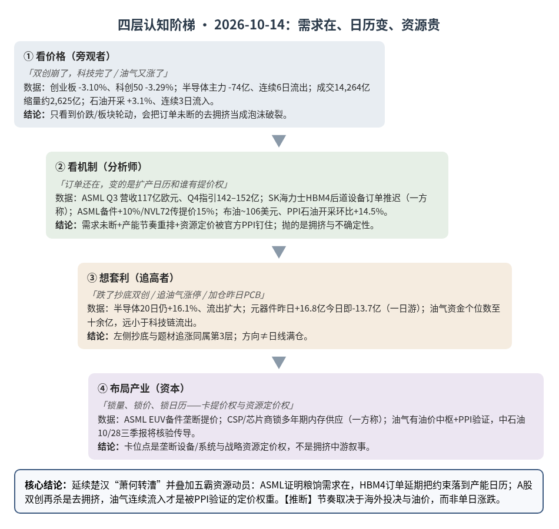
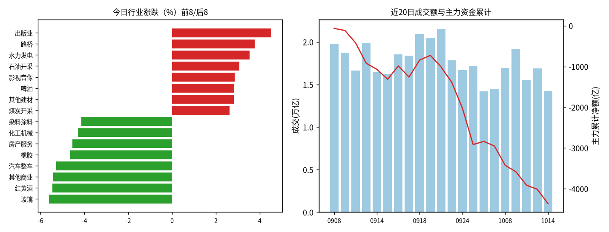
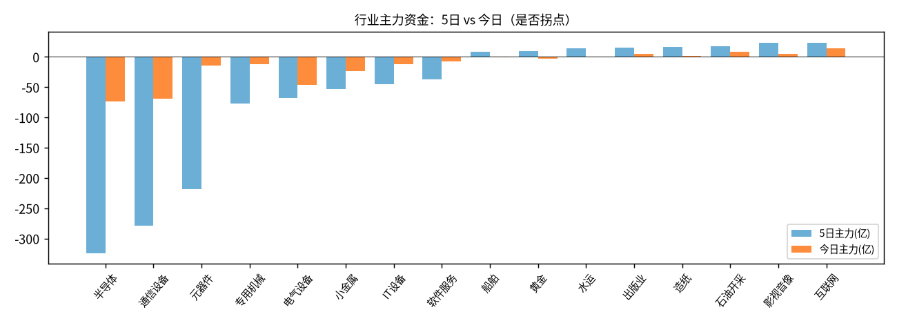

A股投研日报 · 2026-10-14（四层认知版 v4）
ASML 财报证明订单未断，但 SK 海力士推迟 HBM4 后道设备订单把“粮饷约束”从利率端落到产能日历；双创再杀超 3%、元器件一日游回流确认去拥挤未完，油气开采连续 3 日资金流入才是被 9 月 PPI 验证的资源定价权重右侧信号。
本报告为基于公开数据的研究分析，不构成投资建议。
今日市场概况
数据管道速览（Tushare 收盘数据，规则生成，正文判断见下文）
- 风险偏好偏弱，风格偏大盘/价值防御。 上证指数-0.89%收3,767.23，但盘中最深-1.02%（低点3,761.96），近5日上证50 -1.64%、创业板指 -8.56%、科创50 -9.79%，大小盘/成长价值剪刀差 7.5 个百分点。
- 资金面：全A主力（大单+特大单）今日净额 -348.7 亿，近21个交易日中17天为净流出，当前连续6天流出；成交 14,264 亿，较上日-15.5%，但低于20日均值 17,652 亿。
- 主线变化：此前领涨的半导体、通信设备、元器件近5日合计主力净流出 -822 亿，是本轮调整的主要卖压来源；今日涨幅居前的出版业、路桥、水力发电资金体量有限（合计 +10.5 亿）。【推断】当前更像“高位科技去拥挤 + 低位题材轮动”，而非新一轮趋势行情，反弹的持续性需要成交回到 2.0 万亿以上来确认。
变化点
方法：四层认知阶梯 + 历史周期律（
cognitive-ladder.md/references/cases.md）。市场数据来自 Tushare Pro（见附录）；产业数据附来源链接；推断=本文判断；“一方称”=未经独立核验的单方说法。不构成投资建议。
一、世界观定位（先问三句）
- 属于哪一阶段？三国鼎立→楚汉之争过渡带（与案例库总纲“当前定位”一致，本日无阶段切换信号）。
- 三国层（科技自给）实物仍在：ASML Q3 营收 117 亿欧元、Q4 指引 142–152 亿、全年 440–450 亿欧元，毛利率约 56–57.5%，说明先进制程/存储扩产的设备需求并未断裂 源。
- 楚汉层（金融/定价权）继续显性化：布油约 106 美元/桶 源；摩根大通将 2026Q4 / 2027Q1 布伦特现货预测各上调 5 美元至 105 / 100 美元 源；国内 9 月 PPI 同比 +5.0%、环比 +1.2%，石油开采环比 +14.5% 为主要拉动 源。
- 命中哪个历史原型？——延续 10/13 的楚汉“萧何转漕”，并叠加五霸层“盐铁官营/资源动员”。
- 剥结构：胜负手仍是“谁能持续供给粮饷与硬资源”，而非单日芯片股价。
- 找原型：萧何转漕=资本/后勤（案例7）；今日新增结构=地缘扰动下的资源定价权（油轮袭击频率上升、陆上库存低位——一方称 JPM）源，对应五霸层资源动员。
- 验差异：ASML 强指引否定“需求崩”；SK 海力士 HBM4 后道订单延期否定“无脑扩产叙事”——方向仍是资本+资源约束，节奏取决于产能日历与利率，而非 A 股单日涨跌推断。
- 领先指标指向？ 三国→楚汉信号（金融制裁/结算分裂/央行购金）案例库仍为“苗头已现”；本日新增可核验的是油价中枢上移 + 官方 PPI 资源端确认。纪律：方向≠节奏；若布油跌破 90、CSP 上调 Capex 并落地、半导体主力连续 2 日转正，回退“去拥挤未完 / 资源权重上升”的节奏判断。
二、变化一：AI 硬件链去拥挤加速（主变化）——ASML 强 vs HBM4 节奏疑云
第1层 · 看价格
- 标志性话语：「双创崩了，科技完了」「存储芯片/光刻机跌，AI 泡沫破了」。
- 数据：创业板指 -3.10% 收 2,866.76、科创50 -3.29% 收 1,380.26；半导体 -3.0%、主力 -74.1 亿、连续 6 日流出、5 日主力 -324 亿；通信设备 -3.8%、主力 -68.9 亿；元器件 -1.2%、主力 -13.7 亿（昨日曾 +16.8 亿“首日转正”，今日即回流）；全 A 成交 14,264 亿、较上日缩量约 2,625 亿，主力净额 -348.7 亿（Tushare，见附录）。公开复盘称油气/游戏/煤炭居前，风电设备/有机硅/光刻机/电池/存储芯片居后 源。
结论：第1层把“价跌+缩量”直接等同于需求崩；分不清是订单坏了、钱贵了，还是扩产日历被重排。
第2层 · 看机制
- 标志性话语：「订单还在，变的是扩产节奏和谁有提价权」。
- 四机制：
- ①需求机制（未断，设备侧再确认）：ASML Q3 净销售额 117 亿欧元、净利 50 亿、毛利率 57.5%；Q4 指引 142–152 亿；全年 440–450 亿——与“砍单崩盘”叙事相反 源。TrendForce 口径下 4Q26 一般型 DRAM 合约价仍预计环比 +10~15%、NAND +15~20%（延续 10/13 判断）源。
- ②产能节奏机制（新信息）：韩媒 Dealsite 等称 SK 海力士部分 HBM4 后道设备订单由今年下半年推迟至明年，明年投资计划对部分供应商尚未敲定；同时有解读称产能向通用 DRAM 倾斜（一方称）源源。这是采购时序/内部投决信号，不是已核验的量产失败——但足以让市场重估“HBM 无限扩产”叙事推断。
- ③成本/定价权机制：ASML 对三星、SK 海力士 EUV/DUV 备件自 2027 年 1 月起涨价 10%（一方称，双方未发监管公告）源；英伟达方面有报道称 NVL72 系统次年提价约 15% 以对冲存储成本（一方称）源。链条上有垄断提价权的设备/系统商 vs 吸收成本的存储厂 分化加大。
- ④传导机制（A 股链内）：昨日元器件资金“首日转正”今日即转负（-13.7 亿），半导体/通信设备流出扩大至单日约 70 亿级；电气设备 -2.8%、主力 -46.6 亿（风电设备等弱势与公开复盘一致）。沪深股通活跃股成交前五仍为中际旭创、宁德时代、东山精密、新易盛、生益科技——外资交易围绕 AI 硬件与权重，但成交≠净买入（附录）。
结论：机制层是“需求在 + 扩产节奏放缓 + 成本向上游集中”；A 股抛的是拥挤估值与节奏不确定性，不是 ASML 所代表的设备订单归零推断。
第3层 · 想套利
- 标志性话语：「跌了这么多抄底」「昨天 PCB 转正今天加仓」。
- 想抄底半导体 → 发现 20 日仍 +16.1%、资金连续 6 日流出、今日流出额扩大（-74 亿），拥挤未出清；全 A 近 21 日中 17 日主力净流出、成交低于 20 日均 17,652 亿 → 存量市场左侧需要别人接盘。
- 想追昨日元器件反弹 → 一日游已证伪；板厂/材料涨价有机制，但资金未形成连续确认。
- 想赌“ASML 好→A 股光刻机概念反弹” → 光刻机概念属第1层映射，ASML 备件涨价抬的是韩厂成本，不自动等于 A 股设备订单兑现（订单≠收入，同案例3）。
结论：整体左侧抄底半导体/光刻机概念 = 第3层；等资金连续转正与海外存储财报核验节奏。
第4层 · 布局产业
- 标志性话语：「锁量、锁价、锁日历——在确认前卡位有提价权的瓶颈」。
- 设备垄断卡位：ASML 备件/整机提价权（EUV 无替代）= 楚汉层“关中粮仓”在设备侧的实例 源。
- 买方锁供给：CSP/芯片商与存储厂多年期长约、HBM 供给锁定逻辑延续（同案例7）；AMD CEO 赴韩谈 3–5 年内存供应合作（一方称 TrendForce 周报）源。
- 节奏卡位者：能把 Capex 在 HBM 与通用 DRAM 之间再配置的存储巨头——推迟后道订单本身可能是优化产品组合而非需求消失推断；A 股侧真正卡位仍在高端材料/先进封装验证节点（案例3/10），本日无新的国产验证放量公告（待补充）。
结论：资本在重排产能日历与成本传导；卡位点是垄断设备/系统提价权与已锁长约的买方，不是叙事拥挤的中游。
检查清单应用：缺口性质 = 存储仍为原厂产能倾斜造成的人为缺口（HBM↔通用 DRAM 可再配置，参照案例2；今日 HBM4 订单延期恰是人为缺口可调节的证据）；高端光刻/EUV 备件为准自然垄断缺口。替代弹性 = 消费端 DRAM 涨价已挤压手机/家电（三星 DX 部门承压，一方称）源；AI 端短期替代低。领先指标 = ASML 指引/订单、存储厂 Capex 日历、CSP Capex、设备进口；A 股半导体股价与单日资金为滞后/情绪指标。
与案例库交叉验证（变化一）
| 案例 | 案例核心论点 | 今日数据 | 判定 |
|---|---|---|---|
| 案例7 字节296亿贷款（楚汉层） | 融资时机=alpha；利率/资本约束决定谁能继续烧 | ASML 强但存储厂推迟扩产订单；NVL72 提价传声（一方称） | 强化：粮饷/成本约束从利率延伸到产能日历与系统售价 |
| 案例3 装片机/键合机（三国层） | 订单≠收入；国产高端≈0；封装设备节奏敏感 | HBM4 后道设备订单延期（一方称） | 强化“节奏风险”；无新的国产放量数据，分层判断不变 |
| 案例10 临时键合材料（三国层） | 验证→放量 1–2 年 | 无新验证/放量公告 | 待补充，不作判断 |
| 案例4 AI用铜 | 机会在加工环节提价权 | 本日未取得新的铜箔/CCL 提价函 | 待补充；不削弱既往判断 |
| 案例2 钾肥（人为缺口） | 寡头控量可反转 | HBM↔DRAM 产能再配置传闻 | 方法论强化：人为缺口的调节本身就是拐点观察点 |
三、变化二：油气/资源定价权重被 PPI 确认（次变化）
第1层 · 看价格
- 标志性话语：「油气又涨了，避险资金去挖煤挖油」。
- 数据：石油开采 +3.06%、主力 +8.9 亿、资金连续 3 日流入、5 日 +8.0%/主力 +17.5 亿；煤炭开采 +2.61%、主力 +6.2 亿；水力发电 +3.53%、主力 +6.2 亿（首日转正）。公开盘面：油气开采及服务、煤炭开采加工居前 源。
第2层 · 看机制
- 标志性话语：「不是题材轮动，是油价中枢 + 国内出厂价被官方数据钉住」。
- ①价格机制：布油约 106.3 美元、WTI 约 95.6 美元（10/14 早盘指示）源；JPM 上调 Q4/Q1 布伦特现货至 105/100 美元，理由含陆上库存多年低位、油轮袭击频率升至约每周 11 起（7–8 月不足 4 起）、布油相对长距原油有 10–15 美元运费优势（一方称）源。
- ②国内传导：9 月 PPI 环比 +1.2%、同比 +5.0%；石油开采环比 +14.5%、精炼油 +7.4%，与有色等合计上拉 PPI 环比约 0.63 个百分点；煤炭开采环比 +9.5% 源。统计局同时指出 AI/算电协同带动部分电子电气价格上行——资源端与算力端在 PPI 上首次同屏推断。
- ③供给扰动：中东基础设施/油轮袭击推升风险溢价（宏观新闻口径，细节待持续跟踪）源。
- ④对照消费端：9 月 CPI 同比仅 +0.9%、核心 CPI +1.0%，食品同比 -1.7%——涨价在工业上游，尚未变成全面消费通胀 源。
结论：油气走强有油价中枢 + PPI 官方验证两条硬机制；比昨日旅游消费的“量增价减”扎实一个量级推断。
第3层 · 想套利
- 想追油气/煤炭涨停潮 → 发现单日资金仍为个位数至十余亿，远小于科技链单日流出；但与昨日旅游不同，油气已连续 3 日流入、且有油价/PPI 基本面——陷阱在于把“资源定价权年度权重”做成日线满仓（方向≠节奏）。
- 想追出版/影视/游戏（出版业 +4.5%、影视音像 +2.9%）→ 资金首日或弱确认、体量有限，更像存量腾挪推断。
结论：油气有第2层机制支撑，但追涨弹性仍属第3层风险；真正第4层是资源/定价权的年度配置，不是日内题材。
第4层 · 布局产业
- 五霸/楚汉层配置逻辑：战略资源与定价权（案例库总纲）；油公司现金流随油价中枢上移（券商口径，一方称）源。资本动作层面：中石油将于 10/28 审议三季报 源——用业绩验证油价传导，而非追主题。
- 与案例1铜对照：同属资源定价，但铜本日无新 TC/RC 数据（待补充）；油的领先指标更直接=布油期货与地缘扰动频率。
检查清单应用：缺口性质 = 地缘/袭击带来的人为供给扰动 + 低库存的准自然紧平衡（人为部分可随停火反转）；替代弹性 = 能源品种间中等、终端需求对高油价有抑制（JPM 亦上调基于供应而非需求爆发）。领先指标 = 布油、油轮袭击频率、EIA/IEA 库存、国内 PPI 采掘项；A 股油气单日涨幅为滞后映射。
与案例库交叉验证（变化二）
| 案例 | 案例核心论点 | 今日数据 | 判定 |
|---|---|---|---|
| 总纲五霸层（铜/钾肥/粮食） | 争资源阶段配置战略资源 | 布油~106、PPI 石油开采环比 +14.5%、油气资金连续3日流入 | 强化资源定价权重（油为当日可核验样本） |
| 案例1 铜 | 自然缺口，TC/RC 先行 | 本日无铜价/TC/RC | 待补充 |
| 案例5 厄尔尼诺 | 天气是放大器，需与供需共振 | 不直接相关 | 不作判断 |
| 案例7 楚汉层 | 金融/总动员力 | 高油价抬升全球资本成本与通胀预期，与“粮饷贵了”同向 | 间接强化 |
四、供应链风险敞口（人工复核版）
脚本版见
risk_section_20261014.md。以下为剔除关键词误匹配后的可用输入；Δ$ 为假设模板，非预测。
- 基线 EL 第一节点：Nittobo T-glass（福岛）年化 EL 约 $1.81B——电子布瓶颈，与案例4/PCB 材料逻辑同构；本日无新的福岛/日系玻纤断供事件。
- 今日有效事件（保留）：
- SK 海力士 HBM4 后道设备订单延期（capacity，非 shortage）——断供窗口提示：HBM 节点份额高、缓冲约 40 天 vs 恢复期假设 120 天 → 若真扩产失速，窗口约 80 天（参数为模型假设）；A 股暴露方向推断：先进封装设备/材料订单节奏下修风险，非“芯片立刻缺货”。
- ASML 备件涨价 10%（成本冲击）——脚本误标为 shortage；实质是垄断环节提价，强化第2层“谁有定价权”。
- 剔除：将“台积电营收强劲/CPU 涨价”等涨价新闻误判为 shortage 的条目——属关键词误匹配，不纳入机制推断。
- GDELT 限流、巨潮超时：可接受失败；事件表完整性降级，以上以可核验媒体为准。
五、机会表（产业/环节层面，不构成投资建议）
| 机会 | 变化信号 | 认知层级 | 关键风险 |
|---|---|---|---|
| 垄断设备/系统提价权（ASML 备件、NVL72 系统端） | ASML Q3 强指引 + 备件 +10%；NVL72 +15%（一方称） | 第4层（楚汉：定价权） | 中国业务占比约束；地缘出口管制 |
| 油气开采/油服（资源定价权） | 布油~106；JPM 上调至 105；PPI 石油开采环比 +14.5%；资金连续3日流入 | 第2层已查证 + 世界观层年度权重 | 地缘缓和→油价回撤；人为供给扰动可反转 |
| 高端 PCB/电子布/铜箔（供给刚性） | 机制仍在（10/13）；今日元器件资金回流 | 第4层待资金再确认 | 一日游已出现；新产能 2027+ |
| 通用 DRAM vs HBM 产品组合再定价 | SK 海力士产能倾斜传闻（一方称）；DRAM 合约价仍涨 | 第2层（盯人为缺口调节） | 报道未获公司确认；存储财报证伪 |
| 半导体/双创左侧抄底 | 创业板 -3.1%、半导体 5 日 -12.8% | 第3层（陷阱） | 连续6日流出未止；缩量下跌 |
| 出版/影视/游戏追涨 | 出版 +4.5%、影视 +2.9% | 第3层 | 资金体量小、易一日游 |
| 黄金等楚汉层底仓 | 本日黄金板块 -2.8%（资金转负） | 世界观层（不看日线） | 利率预期反复 |
六、明日/本周验证点（可证伪）
- 去拥挤是否结束：半导体主力连续 2 日转正且创业板指收复并站稳 2,866 → 支持出清接近尾声；跌破今日低点 2,863.7 且继续净流出 → 节奏更慢。
- 元器件一日游是否定性：次日继续净流出 → 确认 10/13 转正为假信号，削弱“资金向定价权材料集中”；重新转正并放量 → 材料瓶颈逻辑回到右侧。
- HBM4 节奏：本周内若 SK 海力士/设备商出现正式投资计划或否认延期 → 修正“产能日历约束”；若存储股价与设备商同步走弱 → 强化节奏放缓推断。
- 油气是否一日游：石油开采次日资金转负且回吐今日涨幅一半以上 → 降级为题材；维持流入且布油站稳 100 上 → 强化资源权重。
- 量能：全 A 成交持续 < 1.77 万亿（20 日均）= 存量博弈；> 2 万亿视为增量。
- 海外验证：ASML 电话会细节、后续海力士/英伟达财报窗口；国内中石油 10/28 三季报验证油价传导。

一句话总结：需求在、日历变、资源贵——看价格的人在卖双创、追游戏；看机制的人盯 ASML 与 HBM4 投决、以及 PPI 钉住的油价中枢；布局产业的人卡的是提价权与资源定价权，而不是拥挤的中游叙事。
本报告为基于公开数据的研究分析，不构成任何投资建议。
附录：市场数据（证据底稿）


| 收盘 | 今日% | 5日% | 20日% | MA20 | 成交(亿) | |
|---|---|---|---|---|---|---|
| 上证指数 | 3,767.23 | -0.89 | -1.95 | -4.40 | 3,870.85 | 6,624.92 |
| 深证成指 | 12,110.59 | -1.97 | -6.03 | -11.62 | 13,157.87 | 3,555.48 |
| 创业板指 | 2,866.76 | -3.10 | -8.56 | -14.67 | 3,214.30 | 1,331.08 |
| 科创50 | 1,380.26 | -3.29 | -9.79 | -13.25 | 1,553.32 | 576.23 |
| 上证50 | 2,776.92 | -1.09 | -1.64 | -4.53 | 2,846.48 | 1,036.47 |
| 沪深300 | 4,217.68 | -1.36 | -3.21 | -7.48 | 4,425.11 | 3,684.51 |
| 中证500 | 6,980.11 | -1.48 | -6.12 | -10.17 | 7,518.37 | 2,298.06 |
| 中证1000 | 6,905.17 | -1.68 | -5.39 | -9.85 | 7,419.87 | 2,808.56 |
行业资金热力（按5日主力净额排序，前8/后8）
| industry | 今日% | 5日% | 20日% | 今日主力(亿) | 5日主力(亿) | 资金连续天数 |
|---|---|---|---|---|---|---|
| 互联网 | 1.7 | 6.5 | 2.5 | 13.8 | 23.9 | 4.0 |
| 影视音像 | 2.9 | 14.5 | 14.1 | 5.2 | 23.5 | 1.0 |
| 石油开采 | 3.1 | 8.0 | 4.9 | 8.9 | 17.5 | 3.0 |
| 造纸 | -2.7 | -1.9 | 7.5 | 2.1 | 16.7 | 17.0 |
| 出版业 | 4.5 | 12.5 | 15.6 | 5.0 | 15.0 | 1.0 |
| 水运 | 1.0 | 6.0 | 8.1 | 0.7 | 14.0 | 2.0 |
| 黄金 | -2.8 | -2.1 | -17.5 | -2.9 | 10.0 | -1.0 |
| 船舶 | -1.9 | -2.9 | 1.2 | -0.1 | 8.9 | -1.0 |
| 半导体 | -3.0 | -12.8 | 16.1 | -74.1 | -324.4 | -6.0 |
| 通信设备 | -3.8 | -8.7 | -10.7 | -68.9 | -278.7 | -1.0 |
| 元器件 | -1.2 | -8.4 | -3.4 | -13.7 | -218.5 | -1.0 |
| 专用机械 | -2.6 | -6.9 | 4.6 | -12.1 | -76.7 | -1.0 |
| 电气设备 | -2.8 | -4.2 | -3.5 | -46.6 | -67.8 | -2.0 |
| 小金属 | -2.8 | -10.2 | 38.4 | -23.5 | -53.2 | -3.0 |
| IT设备 | -2.6 | -5.3 | -10.6 | -12.3 | -45.1 | -10.0 |
| 软件服务 | -1.3 | 0.6 | 3.7 | -7.3 | -36.8 | -3.0 |
市场情绪时间序列（近10日）
| trade_date | 成交(亿) | 上涨占比% | 主力净额(亿) | 个股中位涨跌% |
|---|---|---|---|---|
| 20260923 | 17831.3 | 34.0 | -377.9 | -0.6 |
| 20260924 | 16691.1 | 20.2 | -636.3 | -1.3 |
| 20260928 | 17167.1 | 16.2 | -889.3 | -1.9 |
| 20260929 | 14216.0 | 62.4 | 76.5 | 0.5 |
| 20260930 | 14500.8 | 46.2 | -116.0 | -0.1 |
| 20261008 | 16942.9 | 30.6 | -471.5 | -1.0 |
| 20261009 | 19166.9 | 59.3 | -158.1 | 0.6 |
| 20261012 | 15507.5 | 21.0 | -329.2 | -1.7 |
| 20261013 | 16889.1 | 52.3 | -99.6 | 0.2 |
| 20261014 | 14264.0 | 17.6 | -348.7 | -1.9 |
今日上涨979家/下跌4496家，涨幅≥9.8% 48家、跌幅≤-9.8% 24家¹。
龙虎榜侧写：机构专用席位合计 -8.19 亿；净买入居前 电科思仪(+2.00亿)、雪人集团(+0.74亿)、莱美药业(+0.74亿)，净卖出居前 中材科技(-2.44亿)、申昊科技(-2.20亿)、满坤科技(-2.20亿)。 沪深股通活跃股：成交前五为中际旭创、宁德时代、东山精密、新易盛、生益科技，集中在算力硬件与权重股，推断外资交易仍围绕AI链与核心权重展开（成交额≠净买入）。
注：¹涨跌停为按±9.8%阈值近似（limit_list_d无权限）。²行业为Tushare stock_basic分类自行聚合（sw_daily/ths_daily/行业资金流接口无权限），成交加权、剔除N/C新股，成分≥8只。³主力=大单+特大单净额（moneyflow）。⁴2024年8月起北向每日净买入停止披露，moneyflow_hsgt/hsgt_top10数值为成交口径，不可解读为净流入。⁵新闻/公告接口无权限，改用新浪财经7x24公开快讯自动抓取+人工补充。
接口状态：trade_cal:OK；stock_basic:OK；index_daily:OK；moneyflow_hsgt:OK；hsgt_top10:OK；top_list:OK；top_inst:OK；index_dailybasic:OK；新浪7x24(公开):OK 1500条